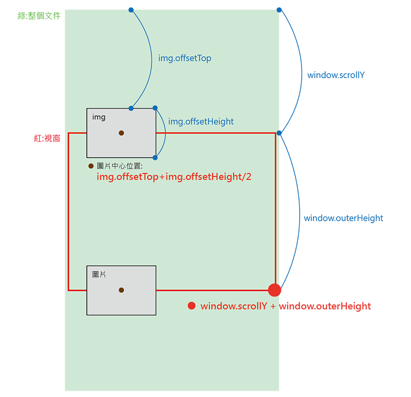

這個主題是根據卷軸事件來控制圖片的進出，
我認為最主要兩個學習重點在於：
- 卷軸事件的處理與效能問題
- 計算網頁元件的相對位置
先把功能做出來吧！
對象
這次效果的主要對象在於每張圖片的進出，會針對每張圖片做判斷1
const allImages = document.querySelectorAll('.slide-in')
現在每次使用querySelectorAll選取對象後就會知道接下來極有可能出現forEach了…
事件偵聽
所有的事件都觸發在卷軸滾動時1
window.addEventListener('scroll',Handler)
座標判斷
所以我們要做甚麼事情呢?(範例中已替我們寫好淡出的class樣式)
這邊建議自己畫張小圖以便明白相對位置的加減
圖片出現的條件：需同時符合
條件一：視窗底部位置大於圖片中心位置時
條件二：滾輪捲動長度小於圖片中心位置
這是我簡略畫的圖：

兩個條件直接把他們定義成變數condition_1和condition_21
2
3const imgPos = img.offsetTop+img.offsetHeight/2 //圖片中心位置
let condition_1 = window.scrollY + window.outerHeight > imgPos
let condition_2 = imgPos > window.scrollY
執行
最後針對每一張圖片去判斷是否兩個條件同時符合。1
2
3
4
5
6
7
8function Handler(){
allImages.forEach((img)=>{
const imgPos = img.offsetTop+img.offsetHeight/2 //圖片中心位置
let condition_1 = window.scrollY + window.outerHeight > imgPos
let condition_2 = imgPos > window.scrollY
condition_1&&condition_2 ? img.classList.add('active') : img.classList.remove('active')
})
}
到這邊其實就算完成了。
防抖動(debounce)/節流(throttle)
DOM上有些事件是會頻繁觸發的，像是mouseover、scroll、resize等
但其實在大部的狀況下我們並不需要他們瘋狂的去觸發，所以出現了
throttle 或 debounce 的方法去優化這些效能問題。
原始範例中作者有提供一個debounce的涵式如下1
2
3
4
5
6
7
8
9
10
11
12
13
14function debounce(func, wait = 20, immediate = true) {
var timeout;
return function() {
var context = this, args = arguments;
var later = function() {
timeout = null;
if (!immediate) func.apply(context, args);
};
var callNow = immediate && !timeout;
clearTimeout(timeout);
timeout = setTimeout(later, wait);
if (callNow) func.apply(context, args);
};
}
所以我們原本的事件觸發會變成像這樣：1
window.addEventListener('scroll',debounce(Handler))
這裡有個不錯的文章介紹彼此的差異
仿造觀念做一個
範例中它直接附上完整的debounce沒有要我們自己寫，代表以我目前的實力可能還無法領悟其中的精髓…
但我們就用目前會技能來做一個效能控制，達到類似debounce的原理，了解作者要傳達給我們的觀念即可。1
2
3
4
5
6
7
8
9
10let timer
window.addEventListener('scroll',function(){
if(timer){
clearTimeout(timer)
}
timer = setTimeout(function(){
console.log('hi')
Handler()
},100)
})
setTimeout在經過指定時間後才會執行一次內容，在這裡我們讓它每次觸發scroll時，都去執行setTimeout，讓它在100毫秒後才能執行Handler()，達到效能的控制。但一開始需要加入一個判斷，當已存在setTimeout時就關閉這個setTimeout，再重新給他一次setTimeout，確保每次只會執行一個setTimeout。(可以嘗試把條件刪除比較差異)